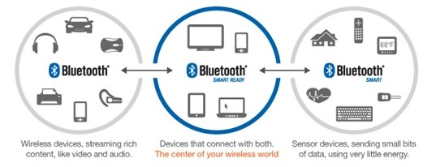
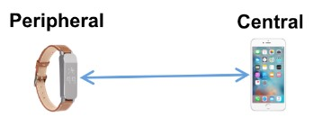
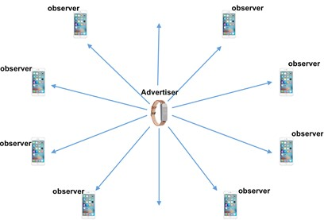
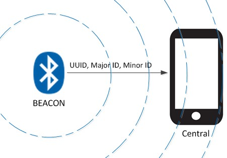
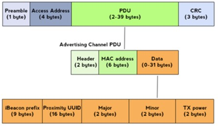
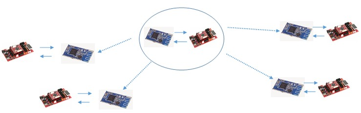

블루투스 4.0 이상의 버전에서는 서로 다른 3가지의 구조 모듈이 존재한다.

①Bluetooth Classic
- 데이터 스트리밍(streaming), 대용량의 데이터 전송 서비스 제공.
- 마스터(master), 슬레이브(slave)관계를 형성하여 1:1 통신을 수행.
→데이터 전송률이 높으며 전력소모가 많다.
②Bluetooth Smart(Bluetooth Low Energy, BLE)
- Bluetooth Classic에 비해 적은 데이터 전송과 향상된 저전력 형태의 구조.
- BLE를 지원하는 모듈은 BLE 모듈간의 통신만 가능하다.
→Classic 디바이스들과 호환되지 않는다.
→iBeacon 기능을 사용할 수 있다.
③Bluetooth Smart Ready
- Bluetooth Classic과 Bluetooth Smart를 동시에 지원한다.
→Bluetooth 디바이스 들에 대한 역방향 호환성이 존재한다.
2. Bluetooth v4.0 Low Energy(BLE) 통신 방법
비콘은 Bluetooth Smart 구조에서 사용이 가능하다. 따라서 Bluetooth Smart(BLE)구조에 대한 통신방법을 설명하겠다.
여기서의 핵심은 Bluetooth Smart 구조는 기존의 블루투스 하위 버전과는 달리 Advertising과 Connecting 이라는 2가지 통신 방법이 존재한다는 것이다.
① Connection mode
참고) 블루투스 장치들 간 페어링 후 1:1로 데이터를 주고받는 경우가 여기에 속한다. (기존 블루투스 통신 방법)

-'1:1'방식으로 디바이스 간의 데이터 교환이 이루어진다.
-양방향으로 데이터를 송수신하며, 많은 양의 데이터를 주고받을 수 있다.
-디바이스 간에 Channel hopping 규칙을 정해놓고 통신이 이루어진다.(안전성 향상)
-2가지 모드로 디바이스 역할이 구분된다.
•Central(Master)
- 연결 전 : 다른 디바이스(Slave)와 연결을 위해 Connectable Advertising Signal을 주기적으로 스캔한다.
→ 스캔 후 적절한 디바이스에 연결(Connection Request)을 요청한다.
- 연결 후 : 타이밍을 설정하고 주기적인 데이터 교환을 주도한다.
•Peripheral(Slave)
- 연결 전 : 다른 디바이스와 연결을 위해 Connectable Advertising Signal을 주기적으로 전송한다.
→ Signal을 받은 Central 디바이스가 Connection Request를 보냈을 때 이를 수락하면 연결이 완료된다.
- 연결 후 : Central 디바이스가 지정한 타이밍에 맞추어 채널을 같이 Hopping하면서 주기적으로 데이터를 교환한다.
참고)Connection mode는 일상생활에서 블루투스 장비의 사용법을 기억하고 있다면 손쉽게 이해할 수 있다.
1.블루투스 스피커와 같이 Slave 역할을 하는 디바이스가 스마트폰과 같이 Master역할을 하는 장치에 주소와 기기 정보를 전송한다.
2. 스마트폰에서 블루투스 장치를 스캔하면 블루투스 스피커에 대한 정보를 얻는다.
3. 블루투스 스피커와 연결하기 위해 일련의 연결 과정(Bonding and Paring)을 수행한다.
4. 연결(Connection)이후 스마트폰은 블루투스 스피커로 데이터를 전송한다(그 결과 스피커에서 스마트폰의 음악을 들을 수 있다.)
②Advertise mode(=Broadcast Mode)
참고) Bluetooth v4.0 BLE에 추가된 통신 방법. iBeacon의 핵심 원리.

- 특정 디바이스를 지정하지 않고 주변으로 신호를 (일방적으로) 전송한다.
→ 하나의 모듈이 두 개 이상의 장치에 데이터를 전송하는 방법이다.
- 한 번에 보내야 하는 데이터 크기가 작은 경우 효율적인 전송 수단이 된다.
- 전송할 수 있는 데이터 크기 제한을 보완하기 위해 Scan Request, Scan Response를 이용.
→연속적인 데이터를 주고받을 수 있다.
- 2가지 모드로 디바이스 역할이 구분된다.
•Advertiser( =Broadcaster)
- Non-Connectable Advertising Packet(소량의 데이터)을 주기적으로 보내는 디바이스.
•Observer
- Advertiser가 보내는 Non-Connectable Advertising Packet을 듣기 위해 주기적으로 스캔하는 디바이스.
곰곰히 살펴보면 'Connection mode'의 Peripheral 디바이스가 주소를 전송하는 것과 'Advertise mode'의 Advertiser 디바이스가 신호를 전송하는 것은 상당히 유사한 것을 알 수 있다. 다만 둘의 차이점은 Connection mode는 연결을 목적으로 신호(Connectable Advertising Signal)를 전송하며 Advertiser mode는 데이터 전송을 목적으로 신호(Non-Connectable Advertising Packet)을 전송하는 것을 알 수 있다.
3. Beacon의 원리와 데이터 전송

비콘은 Bluetooth Smart(BLE) 모드에서 사용되는 Advertise mode를 이용한 통신 방법이다. 이러한 방법에서의 비콘은 다음과 같은 동작을 수행하는 기술이라고 할 수 있다.
1. 비콘(= Peripheral device)는 Advertising packet을 지속적으로 전송한다.
2. Central(예를 들면 스마트폰)에서 Beacon data를 읽고(Scan) 읽은 값에 해당하는 서비스를 수행한다.(예를들면 광고같은 것)
이러한 비콘은 다음과 같은 특징을 가진다.
- pairing / bonding 절차를 삭제하여 전력 손실이 감소된다.
- 자신의 출력 범위 안에서 Advertising packet을 통해 자신의 위치 및 존재를 알린다.
- Advertising Prefix 형식을 따르지 않고 Beacon 인식을 위한 Prefix 데이터를 갖는다.

위의 사진에서 볼수 있듯이 비콘은 Advertising 과정에서 31Byte에 해당하는 Prefix Data를 전송한다.
1. iBeacon Prefex : 9 bytes
2. Proximity UUID : 16 bytes
3. Major : 2 bytes
4. Minor : 2 bytes
5. Tx Power 2 bytes
이 중 UUID, Major, Minor 값은 사실, 물리적으로 의미있는 값이 아니며, 사용자가 특정 값으로 지정하여 사용할 수 있다. 실제로 시장에서는 다음과 같이 비콘을 사용하는 것이 관례이다.
- 한 장소에 많은 수의 비콘을 설치할 때 모두 동일한 UUID를 이용하도록 설정한다.
- Major와 Minor값은 구분자로 이용되며 특정 비콘에 접속하거나, 동시에 둘 이상의 비콘을 이용하고 싶을 때 설정하는 값이다.
→ Major와 Minor 값을 설정하여 각각의 구분된 영역 또는 공간을 설정한다.
(예를 들면, 한 가게 안의 모든 비콘의 Major 값은 동일하게 설정하고 Minor값을 각각 다르게 설정하여 각각의 iBeacon을 구분하도록 설치할 수 있다.)
여기서 이러한 비콘의 동작원리를 다른 관점에서 생각해본다면 비콘의 데이터, 즉 UUID, Major, Minor값은 데이터 값으로도 사용될 수 있다는 것을 알 수 있다. 음...... 구체적인 예를들면... 비콘을 통하여 군집제어를 실현할 수도 있다.

Powered by Brian Kim.